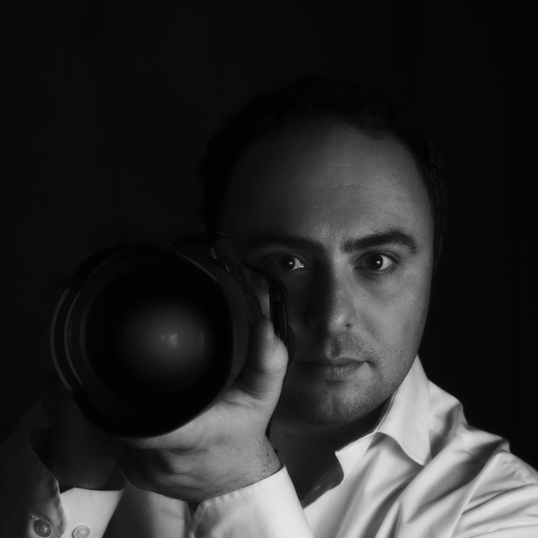

Fotografo per matrimoni in Alto Adige
Il giorno delle nozze è un momento indimenticabile della tua vita. Durante quegli attimi fuggenti tutti quanti proviamo delle emozioni grandissime. Vale sicuramente la pena immortalarli nel modo migliore.
È per questo motivo che è importante affidarsi a una persona competente e professionale quando si sceglie un fotografo, in modo da essere certi che quando riguarderai le tue immagini potrai rivivere quei momenti con la stessa intensità. Scegliendo la persona giusta per questo lavoro potrai goderti il giorno del tuo matrimonio in totale leggerezza.
La mia attività si concentra su tutta la provincia di Bolzano: incluso Merano, Bressanone, Brunico, val Venosta, val D'Isarco, val Pusteria, val Sarentina e tutte le zone limitrofe. Se necessario posso contare sul lavoro di altri abili colleghi per coprire contemporaneamente due location differenti, per esempio se gli sposi vogliono essere fotografati durante la loro preparazione.
Se hai bisogno di un fotografo per il tuo matrimonio contattami cliccando sul bottone rotondo in fondo a destra a questa pagina oppure via email o telefonicamente.
Contatti
Faccio il possibile per rispondervi in giornata. Potete contattarmi in uno dei seguenti modi:
- via email a info@wedding.bz.it
- cliccando sul bottone rotondo in basso a destra su questo sito
- telefonicamente o via SMS al numero +39 377 4965212
Trattamento dati personali e privacy
Ogni informazione personale che mi comunicherete servirà solamente per permettermi di rispondervi. Non trasmetto a nessun altro le vostre informazioni personali e le conservo solamente il tempo strettamente indispensabile a farvi avere una risposta. In ogni momento potete richiedere la modifica o l'eliminazione dei vostri dati scrivendo una mail a info@wedding.bz.it. Questo sito non utilizza alcun tipo di cookie.